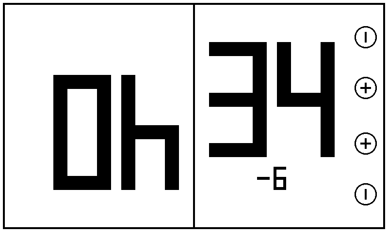
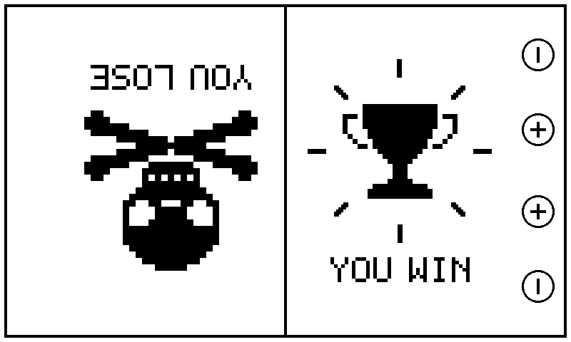
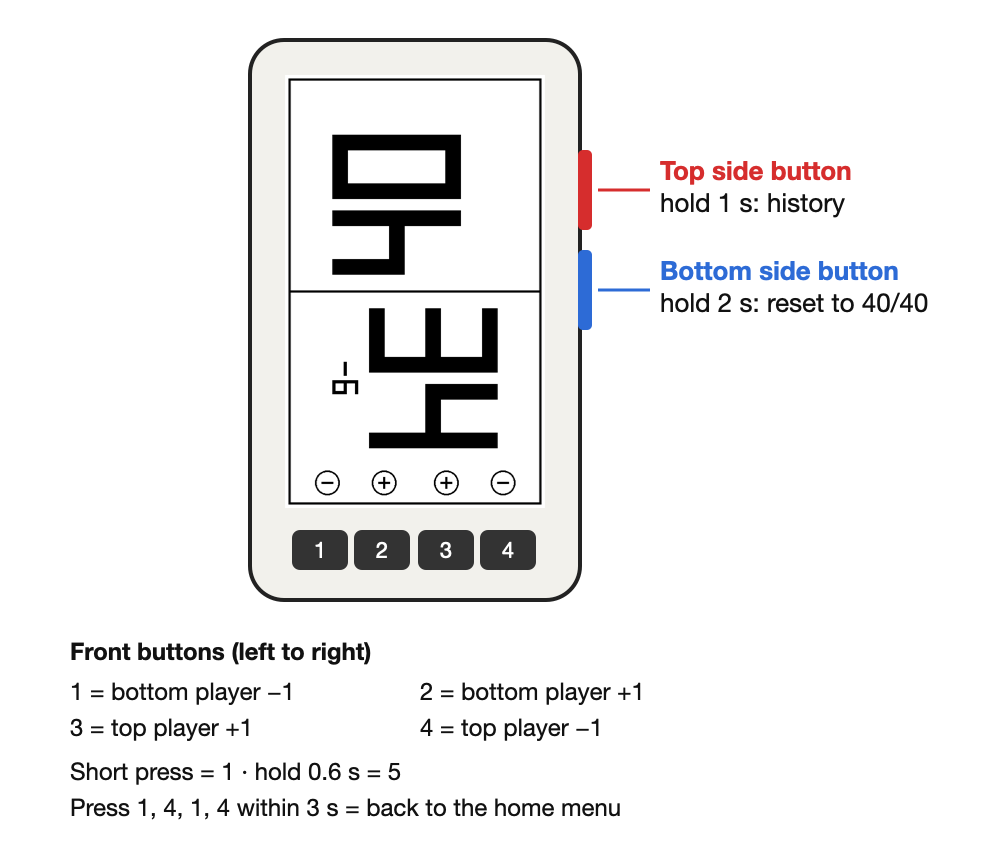
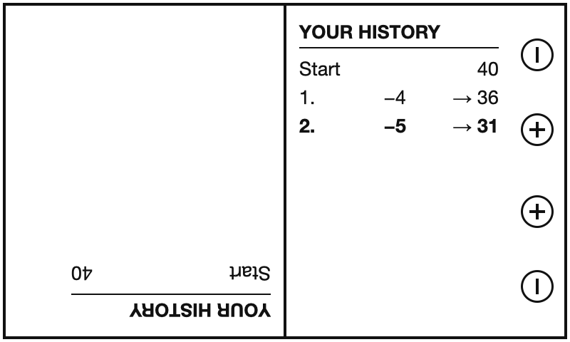
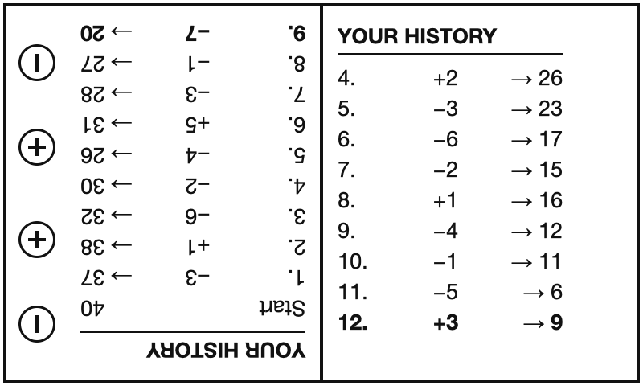
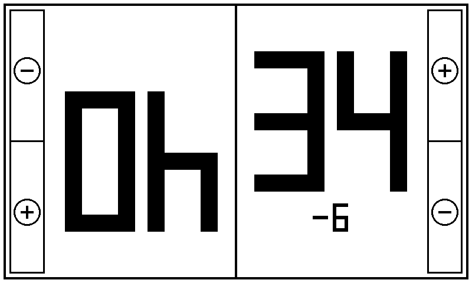
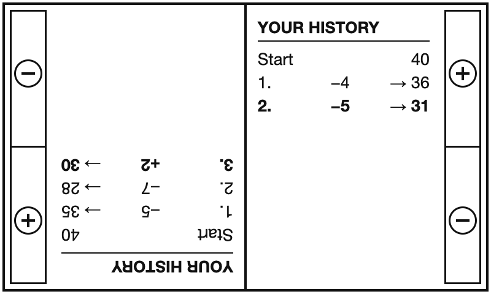

Cross-Life-Point
Crosspoint 2.0 + Lifepoint Counter
A Flesh and Blood life counter for the Xteink X4 and X4 Pro e-ink reader. Cross-Life-Point is the open-source CrossPoint Reader 2.0 firmware with one extra menu entry, LifePoints: a two-player life tracker on the e-paper screen. Your e-reader stays a full e-reader.


Why an e-reader as a life counter?
No phone on the table
No glowing screen, no notifications, no unlocking between turns.
Readable from any seat
Huge totals, rotated so each player reads their own number. E-ink stays clear in bright light.
Weeks of battery
E-paper only uses power when the picture changes, so the counter lasts through many game nights.
Still your e-reader
Reading, library, file transfer and themes are untouched. LifePoints is one more menu entry with a heart.
What LifePoints does
- Two players, both start at 40 life: Flesh and Blood Classic Constructed. It also fits Magic: The Gathering Commander and any other card game that tracks life.
- Change indicator: 2 seconds after your last press, a small "−7" or "+2" under your total shows how much it changed. Quick presses are added up.
- Game over: a skull with crossed bones and "YOU LOSE" at 0, then a trophy with rays and "YOU WIN" for the winner. Pressing + undoes a mistaken 0.
- E-ink friendly: a full refresh only when opening and on reset, fast refresh otherwise, nothing redraws if nothing changed.
- History per player: hold the top side button to see every change on your own half, from "Start 40" down to the newest change in bold. The newest 9 stay when the list gets long.
- Stays awake for 20 minutes without input while LifePoints is open.
- Keeps your game during a quick trip to the home menu.
Try it in your browser
This demo uses the same drawing and rules as the firmware (X4 Pro touch layout). Tap a framed − or + field; hold for 0.6 seconds for 5. Slide out of a field to cancel.
Tap a field to start.
Controls
Xteink X4 (buttons) – tested

| Button (left to right) | Action |
|---|---|
| 1 | bottom player −1 |
| 2 | bottom player +1 |
| 3 | top player +1 |
| 4 | top player −1 |
| Hold any of them 0.6 s | ±5 instead of ±1 |
| Hold the top side button 1 s | show / hide the history |
| Hold the bottom side button 2 s | reset both to 40 and clear the history |
| Press 1, 4, 1, 4 within 3 s | back to the home menu |


Xteink X4 Pro (touch) – untested build

| Action | How |
|---|---|
| −1 / +1 | tap a − or + field (− is on each player's left) |
| −5 / +5 | hold a field 0.6 s, then lift |
| Cancel | slide out of the field before lifting |
| History | hold the Right nav button 1 s (tap a field to close) |
| Reset to 40/40 | hold the Left nav button 2 s (also clears the history) |
| Home menu | Home key |

Install
Download the firmware for your device from the releases page: custom.bin for the X4, custom-x4pro.bin for the X4 Pro. The two chips are different, so don't mix them up.
Easiest: copy the file to the SD card, then on the device open Settings → System → SD Card Firmware Update and select it.
Via USB: make a backup first, then flash the app image to address 0x10000:
esptool --chip esp32c3 --no-stub read-flash 0 0x1000000 backup_x4_16MB.bin esptool --chip esp32c3 write-flash 0x10000 custom.bin
Your X4 must already be able to run CrossPoint. Keep backups private: they can contain Wi-Fi passwords. Full guides: X4 · X4 Pro.
FAQ
Can I use it for Magic: The Gathering?
Yes. Both players start at 40, which matches Commander. It works for any two-player game that tracks life totals.
Do I lose my e-reader?
No. Cross-Life-Point is the normal CrossPoint 2.0 firmware with one extra menu entry. Books, library and settings stay as they are.
Does it work on the Xteink X4 Pro?
There is a touch version for the X4 Pro. It is built and checked, but not yet tested on a real device. Feedback is welcome on GitHub.
Can I see who lost how much?
Yes. Hold the top side button for 1 second. Each half shows that player's own history: every change and the new total, newest at the bottom. Resetting clears it.
Why not press two buttons at once to reset?
On the X4 all four front buttons share one analog input, so two buttons pressed together read as one wrong button. Holding a side button is reliable.
Is this an official CrossPoint project?
No. It's an unofficial fork, not supported by the CrossPoint team. All credit for the reader firmware goes to the CrossPoint contributors.